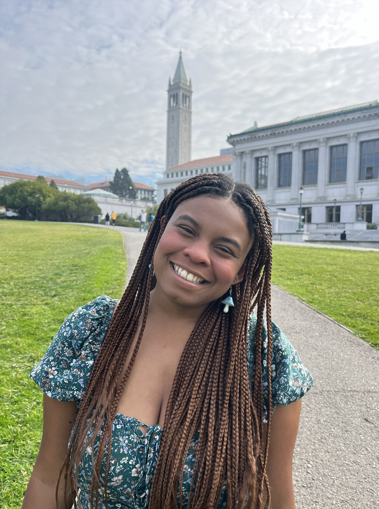

Hey there! I'm Nadia, a freelance reporter and first-year UC Berkeley journalism graduate student with a track record of well-sourced stories about city design and transportation. My goal as a reporter is to use data to uncover issues related to transportation, pedestrian, and bicycle infrastructure.
I'll be on the features desk for the East Bay Times and the general assignment desk for The Oaklandside as a summer intern.
You can contact me by email or visit my LinkedIn.
My work
Participated in several group bike rides with Oakland cyclists for their weekly “coffee ride” to different shops in the city. Spoke with both casual and serious cyclists, in addition to an urban planning expert.
Investigated the campus-wide appeal of a UC Berkeley student organization dedicated to banning cars in the city. Consulted with numerous urban planning experts, students, and community members.
Reported on the awaited implementation of an E-bike lending library in Richmond, Calif. Participated in a 20-mile bike ride with the organization helming the project to speak with sources.